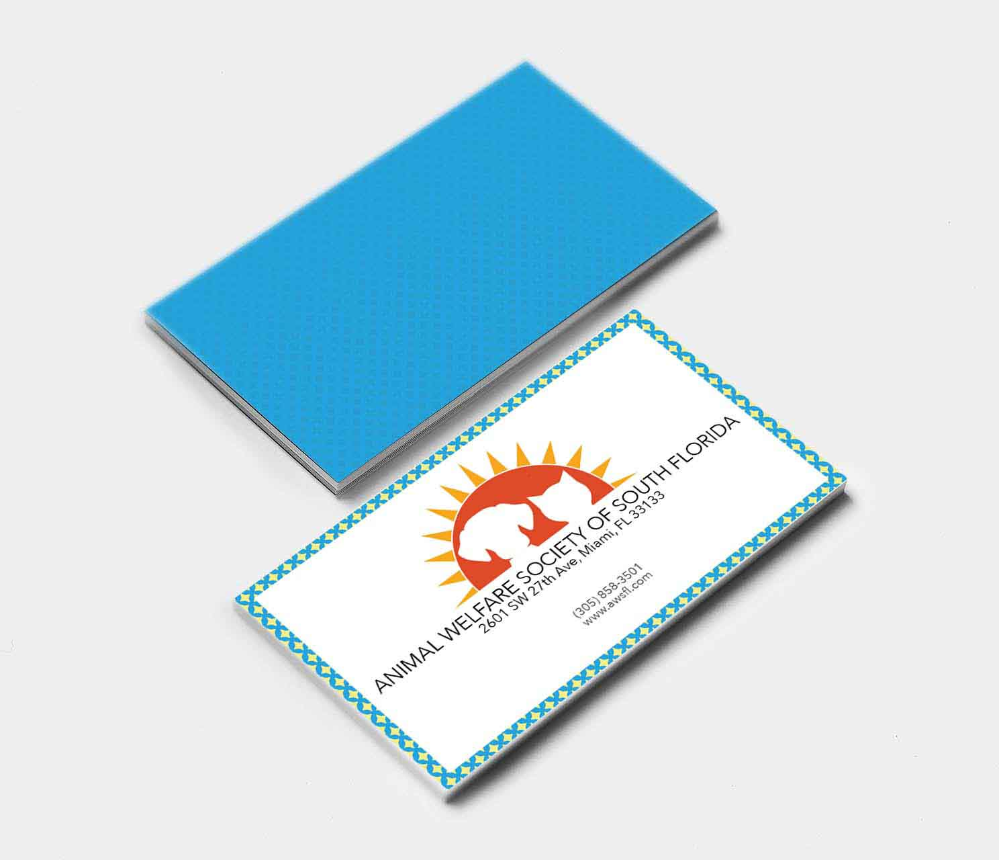

Animal Welfare Society South Florida
Branding campaign for local Miami nonprofit the Animal Welfare Society South Florida. The AWSFL is South Florida's only full-service, low-cost animal hospital. However noble their cause though, their branding and website was very outdated and forgettable. The project below was a full branding makeover, to increase the community's awareness of AWSFL's presence. The full package includes the deck with the logo, color palettes, stationary, business cards, apparel, website, and additional merch design.

